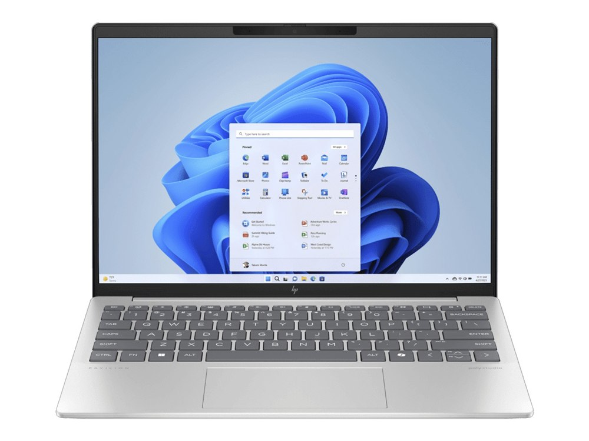

Ficha técnica
| Procesador | AMD Ryzen 7 7735U |
|---|---|
| Gráficos | Radeon 680M |
| Memoria | 16 GB LPDDR5 |
| Almacenamiento | 512 GB SSD |
| Pantalla | 13,3" IPS 2.5K |
| Peso | 0,97 kg |
| Autonomía | 11 h según el fabricante |
| Sistema operativo | Windows 11 |
| Precio | 799 € orientativo |
Para quién es
Es de los mejores del catálogo en la portabilidad: 98 de 100. Para jugar se queda en 35 de 100. Es el más ligero de los 34 modelos. Cuesta 799 €, en la mitad de la tabla de precios.
- Encaja si lo que más te importa es llevarlo encima a diario, y el presupuesto llega a 799 €.
- Busca otra opción si lo que prima es el gaming: aquí saca 35 de 100.
Puntos fuertes y débiles
A favor
- Ligero: 0,97 kg, el 1.º más ligero de los 34 modelos.
- Nota alta para moverse: 98 de 100.
En contra
- No es para jugar: 35 de 100 en juegos.
Dónde comprarlo
El precio cambia a menudo y puede haber varias configuraciones: comprueba procesador, memoria y almacenamiento antes de comprar.
Ver precio actual en AmazonComo afiliado de Amazon, ComparaPortátil obtiene ingresos por las compras adscritas que cumplen los requisitos aplicables. No cambia lo que pagas ni las notas del comparador.
Notas por uso
Escala de 0 a 100. En el comparador se recalculan según el perfil que elijas. La nota global es 75 / 100, la media de los cuatro apartados.
Alternativas por precio
Los tres modelos del catálogo que más se acercan a su precio:
- Lenovo IdeaPad Slim 5 13mismo precio
- MacBook Neo (A18 Pro)mismo precio
- Acer Swift Go 14 AI+24 €
Rival directo: Lenovo IdeaPad Slim 5 13
Es el modelo del catálogo más cercano en precio que también destaca para moverse.
| HP Pavilion Aero 13 | Lenovo IdeaPad Slim 5 13 | |
|---|---|---|
| Precio | 799 € | 799 € |
| Peso | 0,97 kg | 1,19 kg |
| Autonomía | 11 h según el fabricante | 28 h según el fabricante |
| Nota para moverse | 98 / 100 | 96 / 100 |
| Nota global | 75 / 100 | 73 / 100 |
Preguntas frecuentes
¿Sirve el HP Pavilion Aero 13 para jugar?
No es su punto fuerte: 35 de 100 para jugar, con gráfica integrada (Radeon 680M). Sirve para juegos sencillos o en la nube.
¿Cuánto dura la batería del HP Pavilion Aero 13?
11 horas según el fabricante. Esa cifra se mide con brillo bajo y tareas suaves; con uso normal, cuenta con algo más de la mitad.
¿Es buena opción para llevarlo a clase o al trabajo cada día?
Sí. Con 0,97 kg se lleva en la mochila todos los días sin notarlo.
Compáralo con otro modelo
Abre el comparador con este portátil ya cargado y enfréntalo a cualquiera de los 34.
Abrir el comparadorGuías relacionadas
- Mejor portátil para estudiar por menos de 800 €
- MacBook o Windows: cuál elegir según tu presupuesto
- Mejor portátil ligero por menos de 1,4 kg